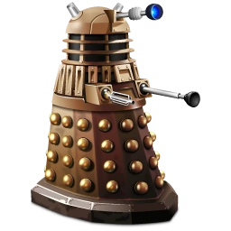

|  | Home | Quem somos | Vire um Dalek |
Sobre os DaleksThe Daleks are a fictional extraterrestrial race of mutants principally portrayed in the British science fiction television programme Doctor Who. They were conceived by writer Terry Nation and first appeared in the 1963 Doctor Who serial The Daleks, in shells designed by Raymond Cusick. |
|
Todos direitos a BBC |
|